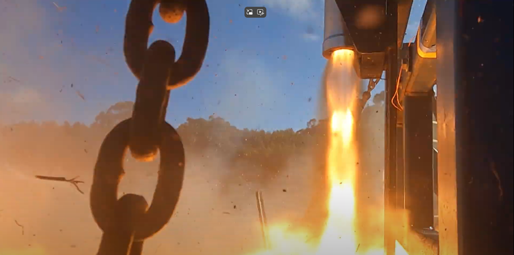
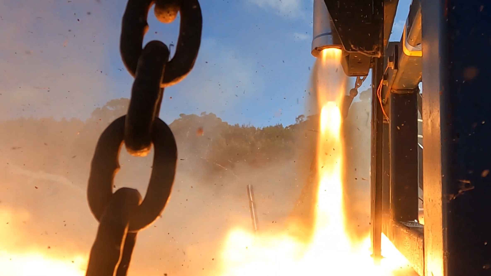
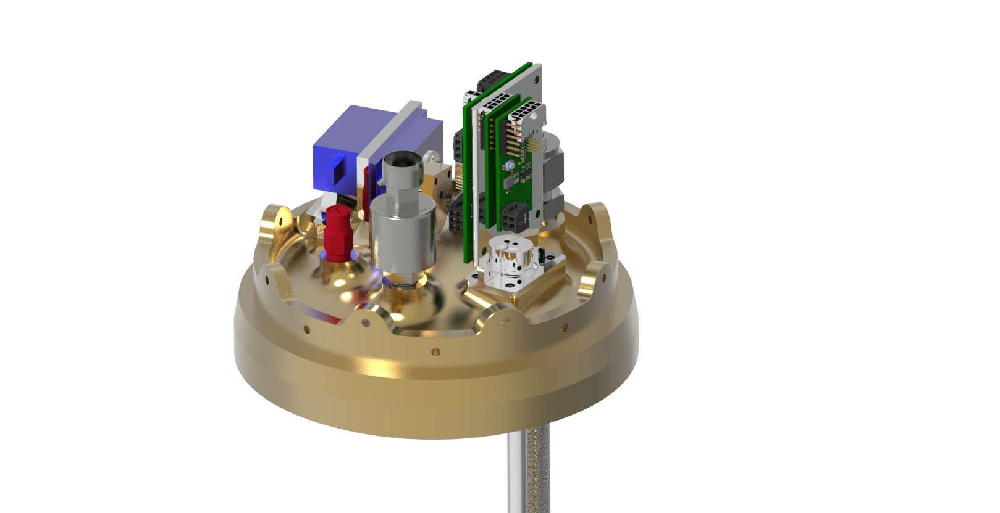

Role
- Leading propulsion design and integration for the hybrid rocket vehicle.
- Shaping feed system architecture, valve control and test infrastructure for launch campaign readiness.
- Coordinating technical strategy, sponsor engagement and risk management across a 150-person team.
Technical focus
Propulsion hardware
Design of 3 kN and 12 kN hybrid rocket engine systems and associated feed components.
Oxidiser systems
Custom pneumatic valves, fluid lines and safety systems for liquid oxidiser handling.
Test readiness
Vertical test stand design, instrumentation planning and launch campaign preparation.
Process & visuals

Vehicle concept
Transformed early vehicle concept into a hybrid propulsion layout with clear feed path and control boundaries.

Engine integration
Integrated oxidiser systems, pneumatic valves and load-bearing hardware to support flight-ready assembly.

Launch planning
Built the launch system readiness plan with test stand sequences, safety checks and campaign milestones.
Media gallery



Project story
Analyze
Reviewed engine architecture from tank bulkhead to combustion chamber with annotations for valve assemblies and safety plumbing.
Develop
Designed the fill control system, capacitive tank sensor and active vent strategy for a launch-ready hybrid engine.
Operate
Documented the automated fill algorithm, quick-disconnect ignition sequence and launch hold logic used in campaign planning.
Current status
- Propulsion and systems architecture are under active development.
- Launch readiness workflow is being improved through test planning and review.
- More detailed documentation, diagrams and test data will be added as the program progresses.